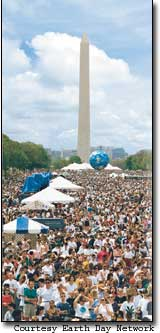
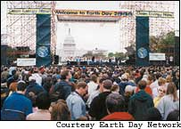
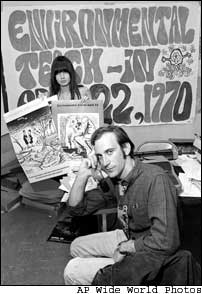
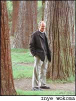
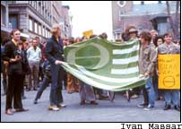
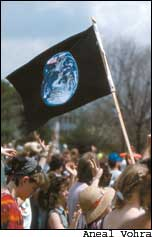

Denis Hayes was national coordinator of the first Earth Day in 1970 - an event often credited with launching the modern American environmental movement. He is the recipient of numerous public-service awards, including the 1979 Jefferson Medal for Greatest Public Service by an Individual under 35; he was also named one of the 100 most influential Americans of the 20th century by Look magazine. Hayes remains chairman of the board of the international Earth Day Network (which operates in 160 countries). He also is president of the Bullitt Foundation, an environmental philanthropic organization based in Seattle - Mother
Earth Day 1970 caught America off guard because of its enormous size and its wildly diverse participants. But what most unnerved guardians of the status quo was its message - a view of society and the world that went beyond left and right, and was rooted mostly in the obscure science of ecology.
First, consider its size. Through the gauze of time, large events that occurred 30 to 40 years ago all sort of get lumped together: the civil rights marches, the mobilization to end the Vietnam War, the Woodstock music festival. But Earth Day was at least five times larger than any anti-war rally had been and 20 times larger than any coordinated civil rights rally. Two Woodstocks could have fit comfortably into the New York City Earth Day crowd, and that was just the largest of thousands of events held in cities, towns, villages, hamlets and crossroads across America. When it became clear how large and widespread Earth Day was going to be, Congress - in an unprecedented move - adjourned in the middle of the week just so every member could go back home and try to take the pulse of what was happening.
In a nation that seemed to be coming apart at the seams in the 1960s, Earth Day pulled people together. The organizers reached out to tycoons, such as financier Dan Lufkin and welfare organizers such as George Wiley of the National Welfare Rights Organization. Participants came from every walk of life and every political persuasion
Today, virtually no one remembers that organized labor was the largest source of funding for the first Earth Day. In fact, even after Earth Day, the United Auto Workers (UAW) provided enthusiastic support for the Clean Air Act of 1970. Walter Reuther, the UAW president, was a founding director of the Coalition for Clean Air, and argued that air pollution would otherwise destroy the market for his workers’ product.
“Our members and their families are directly affected by the environment around them, whether inside the plant or outside the plant,” Reuther said. “The pollution of the air and of the water; the unwise waste of our natural resources are of concern to all of us.”
Two important but non-overlapping movements - the conservation movement and the environmental health movement - came together for the first time on Earth Day.
The traditional conservation movement was rooted in hunting and fishing. Both rich trophy hunters and working people, for whom an annual deer or elk was an important part of the family’s protein, had come to understand that game depends on healthy habitat. They were joined in the conservation movement by others who treasured nature for its own sake - often urban dwellers who had romantic ideas about wilderness and wild things. Conservationists were a small but influential interest group, with an impressive track record of preserving natural areas.
What I’m calling the environmental health movement did not have a name yet in 1969. In the 1950s, led by distinguished scientists such as double-Nobel Laureate Linus Pauling and philosopher Bertrand Russell, many people began worrying about the odorless, tasteless and invisible radioactive poison permeating the whole planet from atmospheric nuclear tests. (Radioactive Strontium-90, which did not even exist before the atomic bomb, is in the bones of every member of my generation.) Then, in the 1960s, inspired by Rachel Carson’s seminal Silent Spring, many people began worrying about odorless, tasteless and invisible poisons permeating the whole planet in the form of pesticides. By the end of the 1960s, these concerns were joined by worries about uncontrolled industrial pollution poisoning the air and water.
On Earth Day, the conservationists and the environmental health advocates joined the stage with those worried about overpopulation, overconsumption, lead poisoning and a wide range of other related issues.
The “political” message of Earth Day was, of necessity, couched in terms designed to be broadly inclusive. Yet it was genuinely revolutionary. America, we realized, was growing wealthier, but Americans were not better off as a consequence. There was a fundamental disconnect between how the nation measured progress and what people really cared about - a disconnect between what our statisticians counted and what really counts.
Not long before his assassination in 1968, Robert Kennedy discussed the gross national product in a speech that could have served as the anthem for Earth Day. I quoted his words scores of times as I crossed the country organizing coalitions:
“The gross national product includes air pollution and advertising for cigarettes, and ambulances to clear our highways of carnage. It counts special locks for our doors, and jails for the people who break them. The gross national product includes the destruction of the redwoods and the death of Lake Superior. It grows with the production of napalm and missiles and nuclear warheads.
“And if the gross national product includes all this, there is much that it does not comprehend. It does not allow for the health of our families, the quality of their education or the joy of their play. It is indifferent to the decency of our factories and the safety of our streets alike. It does not include the beauty of our poetry or the strength of our marriages, the intelligence of our public debate or the integrity of our public officials ... The gross national product measures neither our wit nor our courage, neither our wisdom nor our learning, neither our compassion nor our devotion to country. It measures everything, in short, except that which makes life worthwhile, and it can tell us everything about America - except whether we are proud to be Americans.”
That - expressed in myriad ways by all manner of people - was the political theme of Earth Day
The intellectual framework of Earth Day was based on the realization that the science of ecology needs to encompass people. Ecologists had studied the interactions of animals and plants in myriad ecosystems, measuring their energy balances, studying succession, discovering the importance of diversity in maintaining resilience, exploring concepts such as “carrying capacity” - how large a population the ecosystem will support. Well:
• human populations, too, can overshoot the environment’s carrying capacity and cause it to collapse;
• people, too, must not consume more energy than we can be produce with sustainable methods;
• cities need to be designed around the principles that govern natural habitats;
• and even industry must conform to the fundamental laws of ecology
To a rather astonishing degree, the first Earth Day was a robust success. For more than a decade afterward, it was virtually impossible to find anyone who was openly anti-environmental. The nation changed the legal framework to stop industries from squirting poisons into the air and water.
President Nixon, by executive order, created the world’s first Environmental Protection Agency (EPA). The new Endangered Species Act afforded protection to all of the creatures in the world, whether or not they served immediate human needs.
Thirty-five years after the first Earth Day, the bald eagle is no longer endangered, and the Great Lakes are returning to life. Air pollution has decreased by more than one-third, even though we now are driving twice as many vehicles more than twice as many miles a year. (The progress would have been far greater if half of them weren’t sport utility vehicles and trucks.) Ohio’s Cuyahoga River no longer catches on fire. Thousands of toxic streams, lakes and estuaries are now clean enough for swimmers and anglers.
Perhaps most important, tens of millions of people choose to recycle, conserve water and energy, raise organic gardens, consume less of everything and even limit their family sizes for environmental reasons. Environmental values crossed over from being abstract ideas about pesticides and whales to being moral imperatives that comprised the heart of people’s self-identity
Today, environmental concerns increasingly guide the nation’s investments, its lifestyles and its law. The right to a safe, healthy environment - a concept that essentially did not exist before 1970 - has become an American core value, possessing wider, deeper public support than some of the values enshrined in the Bill of Rights.
However, over the last 15 years, the environmental coalition has grown fragmented. Most environmentalists still firmly maintain their basic values. But some have grown wary of what they see as regulatory overreaching, while others think that tax regulators are letting industry flout rules designed to protect public health.
Perhaps more important, though, the environment has lost some of its sizzle as an electoral issue. The biggest issues in the last election appear to have been terrorism, the Iraq war, abortion, affordable health care and gay marriage. Although anyone looking back on this election 100 years from now will see climate disruption as vastly more important than any of those issues, few people voted in 2004 on the basis of climate policies or any other environmental issues.
George W. Bush is, by any conceivable criteria, the worst environmental president since Earth Day 1970. John Kerry’s environmental record, as scored by the nonprofit League of Conservation Voters (www.lcv.org), was among the best ever for those nominated for president. But these facts had almost no electoral significance in the 2004 presidential election
I have many friends - who care deeply about the health of their families, the quality of their neighborhoods, even the fate of the planet - for whom politics is repugnant. Politics is a battle for power, and it often brings out the very worst in people. Even at its best, politics can be enormously frustrating.
But if you really care about climate change, healthy water, a swift global transition to renewable energy, the fate of whales and snow leopards, or any of a thousand other things, politics is the only game in town. Those of us who care about the environment will either do politics, or we will have politics done to us. Today we are having politics done to us. Historically, though, the conservation movement has been bipartisan:
• A Republican, President Grant established Yellowstone as the world’s first national park in 1872.
• President Theodore Roosevelt, also a Republican, tripled the size of the national forests, expanded the national parks and established the first national monuments.
• President Nixon, another Republican, took the initiative to establish the EPA, and he named Bill Ruckelshaus - perhaps the finest EPA chief ever - as its first administrator.
• The entire blitz of landmark environmental laws between 1970 and 1975 were drafted with bipartisan cooperation and passed with overwhelming bipartisan support. Virtually no one today remembers that the most controversial element in the Clean Air Act, which forced Detroit to adopt a technology that was not yet commercially available, was championed by Sen. Howard Baker, R-Tenn. Rather than becoming a pariah - as he might today - Baker went on to become the leader of the Senate and then White House chief of staff
In years past, Republican politicians such as John Chafee, John Lindsay, Jack Heinz, Dan Evans and Jacob Javits were as likely to be the source of creative environmental solutions as were Democrats. More recently, though, Vermont Sen. Jim Jeffords (with a 92-percent rating from the League of Conservation Voters - higher than any other Republican senator) left the party and became an Independent, mostly for environmental reasons
“Republican environmentalism” is not entirely an oxymoron today, even at the federal level, but it is now mostly the domain of mavericks. Senators Lincoln Chafee of Rhode Island, Olympia Snowe of Maine and Susan Collins of Maine all have very good records, but are largely frozen out of power by the mainstream party. Sen. John McCain of Arizona, my favorite maverick, has taken courageous leadership roles on major environmental issues. With Sen. Joseph Lieberman, D-Conn., McCain co-authored principal legislation to address global warming, and he has fought valiantly for it despite strong opposition from the White House. McCain has also been an outspoken proponent of tougher standards for automobile fuel efficiency and has voted to protect the Arctic National Wildlife Refuge.
Green Republicans are more common in state and local offices. California Gov. Arnold Schwarzenegger has emerged as an ardent environmentalist, and he has appointed smart, innovative people to forge his environmental policy. Similarly, Republican Govs. George Pataki of New York and Mitt Romney of Massachusetts are strong environmentalists, and they have appointed some of the best environmental officials in the nation. On the climate disruption issue, Schwarzenegger, Pataki and Romney are arguably the three greenest governors in America!
Bill Ruckelshaus, long after his stint as head of the EPA, is spending his golden years as the strongest champion of endangered salmon in the country. The indefatigable Martha Marks and her REP America coalition of green Republicans is striving heroically to keep environmental values alive in the national party. (If you are a green Republican, for heaven’s sake join this wonderful band of gutsy crusaders: (505) 889-4544; www.repamerica.org.) But for now, the White House and Congress are turning their backs.
The most powerful man in Congress today is Rep. Tom DeLay of Texas. Environmentalists know DeLay best for his contention that the EPA is “the Gestapo of government ... a bunch of jack-booted thugs.” DeLay also denounced the Nobel Prize committee for chemistry as “Swedish environmental extremists” because they gave the prize to scientists who described the atmospheric chemistry behind the ozone hole; their work resulted in a global treaty that has helped heal that problem
Alaska Rep.on Young, chairman of the House Committee on Transportation and Infrastructure, describes environmentalists as “a socialist group of individuals ... I’m proud to say they are my enemy. They are not Americans, never have been Americans, never will be Americans.”
The chairs of every environmental committee in the House and the Senate have League of Conservation Voters scores of zero. They are not indifferent to the environment; they are aggressively hostile to our government’s efforts to protect it.
To the double misfortune of environmentalists, the environment has become a partisan issue. This is unfortunate on one hand because the Republican leadership is now required to oppose environmental protection. It is unfortunate on the other hand because the Democrats now take environmental voters for granted, and don’t assign meaningful priority to the environment, even when they hold the White House or Congress.
The world is facing some truly awe-inspiring environmental challenges: Humans are changing the world’s climate. Most of the major ocean fisheries have either collapsed or are in a state of near collapse.eserts are spreading around the planet. (I recently visited the Gobi, now just an easy two-hour drive from Beijing.) Pulitzer Prize winner E.O. Wilson and most of his peers in ecology contend humankind is currently causing the largest extinction in 25 million years. Pulitzer winner Jared Diamond makes a compelling case in his book Collapse: How Societies Choose to Fail or Succeed that America is on the verge of slipping down the same path that has led so many earlier societies into ecological collapse.
America has the intellectual resources, the money, the technology and the institutional agility to lead the world through this perilous time. But that will only happen when the environment again enjoys bipartisan support - with both parties vying to see who can produce the most creative, effective approaches.
The following festivals are just some of the many gatherings that will be held across the United States for the 35th anniversary of Earth Day. If you don’t see a listing for your area, visit Earthday.net for the most recently announced events.
If you are coordinating an Earth Day event, you can register it at Earthday.net and on the MotherEarthNews online calendar.
|
 EARTH DAY NETWORK About half a million people attended events for Earth Day 2000 on the National Mall in Washington, D.C. |
 EARTH DAY NETWORK Earth Day 2000 in Washington, D.C. |
 AP WIDE WORLD PHOTOS Viewpoint author Denis Hayes (pictured in 1970) has been leading international Earth Day events since he coordinated the first Earth Day in 1970. |
|
 Inye Wokoma Denis Hayes in 2004. |
 Ivan Massar Environmentalists carry an Earth flag through the streets of Boston on Earth Day 1970. |
 Aneal Vohra Raise the flag! Earth Day celebration, 2000. |